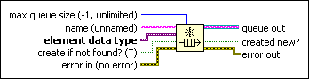
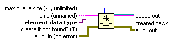

Obtain Queue Function
Owning Palette: Queue Operations Functions
Requires: Base Development System
Returns a reference to a queue.
Use this reference when calling other Queue Operations functions.

 Add to the block diagram Add to the block diagram |
 Find on the palette Find on the palette |
Owning Palette: Queue Operations Functions
Requires: Base Development System
Returns a reference to a queue.
Use this reference when calling other Queue Operations functions.

| Add to the block diagram |
Find on the palette |
 |
max queue size is the maximum number of elements you want the queue to hold. The default is –1, specifying that the queue can hold an unlimited number of elements. If a queue reaches max queue size, the Enqueue Element or Enqueue Element at Opposite End functions wait until the Dequeue Element or Flush Queue functions remove elements from the queue. If a queue with the same name exists, LabVIEW ignores this input and uses the size from the existing queue.
|
||||
 |
name contains the name of the queue that you want to obtain or create. The default is an empty string to create an unnamed queue. | ||||
 |
element data type is the type of data that you want the queue to contain. You can wire any data type to this input. | ||||
 |
create if not found? specifies whether you want to create a new queue if one with the same name as name does not exist. If TRUE (default), the function creates a queue if one with the same name does not exist. | ||||
 |
error in describes error conditions that occur before this node runs. This input provides standard error in functionality. | ||||
 |
queue out is a reference to the existing queue or the new queue created by this function. | ||||
 |
created new? is TRUE if the function created a new queue. | ||||
 |
error out contains error information. This output provides standard error out functionality. |
When you enqueue and dequeue resizable data types, such as paths, strings and arrays, you do not affect the memory used by queues. Queues transfer data, but do not generate copies of the data. Use the Lossy Enqueue Element function if you are concerned that elements waiting to enter an already-full queue might cause jitter in a deterministic loop.
Use named queues to pass data between two sections of a block diagram or between two VIs in the same application instance. If you do not wire name, the function creates a new, unnamed queue reference. If you wire name, the function searches for an existing queue with the same name and returns a new reference to the existing queue. If a queue with the same name does not already exist and create if not found? is TRUE, the function creates a new, named queue reference.
If you use the Obtain Queue function to return a reference to a named queue inside a loop, LabVIEW creates a new reference to the named queue each time the loop iterates. If you use Obtain Queue in a tight loop, LabVIEW slowly increases how much memory it uses because each new reference uses an additional four bytes. These bytes are released automatically when the VI stops running. However, in a long-running application it may appear as if LabVIEW is leaking memory since the memory usage keeps increasing. To prevent this unintended memory allocation, use the Release Queue function in the loop to release the queue reference for each iteration.
This function might return error codes 1, 2, 1094, 1100, 1491, or 1548.
 | Note You cannot use queues or named queues to communicate across application instances. If you attempt to communicate with a named queue in another application instance, LabVIEW does not return an error but you might not receive the expected results. If you obtain a queue reference in one application instance, you cannot use that queue reference in another application instance. If you attempt to use a queue reference in another application instance, LabVIEW returns error 1491. |
Refer to the Queue Overflow and Underflow VI in the labview\examples\Synchronization\Queue directory for an example of using the Obtain Queue function.
 Open example Find related examples
Open example Find related examples